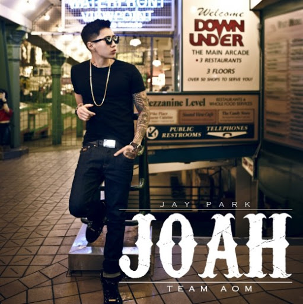
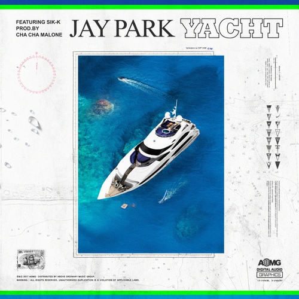

Youtube
Your browser does not support the video tag
JayPark TV
구독자 216만명
Subscribe
1K
0
Share
Save
Report

박재범 Jay Park '좋아 Joah' [Official Music Video]
조회수 17,609,779회ㆍ2013. 4. 10.
박재범 Jay Park - Solo (Feat. Hoody) Official Music Video
조회수 24,579,986회ㆍ2015. 10. 3.
